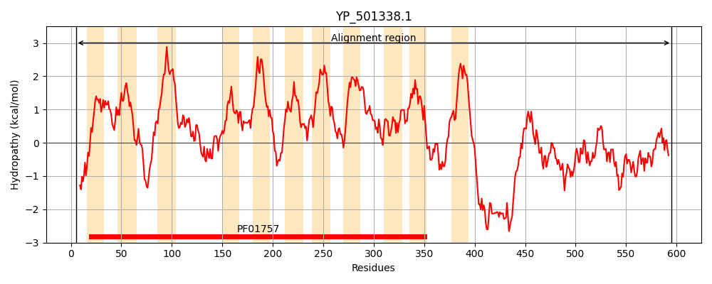
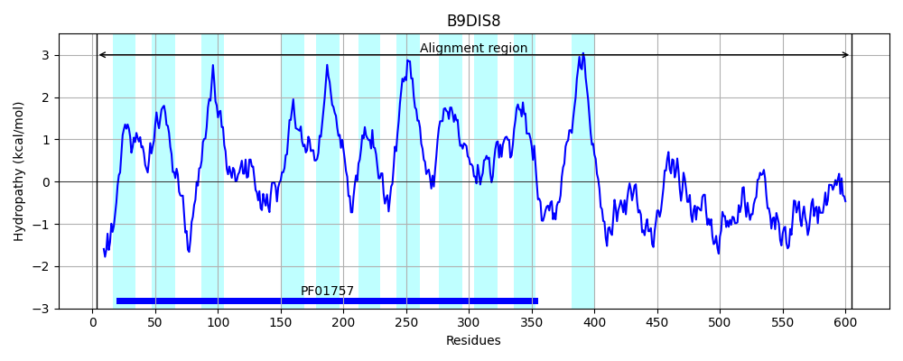
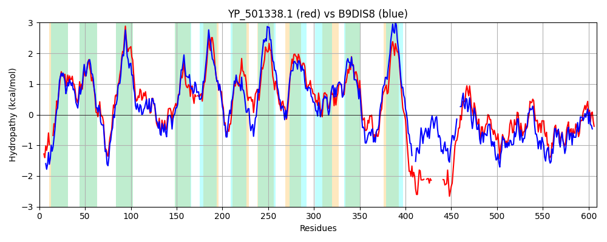

Hit Accession: B9DIS8
Hit TCID: 9.B.97.5.1
Hit Description: gnl|BL_ORD_ID|2154 gnl|TC-DB|B9DIS8|9.B.97.5.1 Putative membrane protein with acyltransferase 3 family domain OS=Staphylococcus carnosus (strain TM300) GN=Sca_0581 PE=4 SV=1
Mach Len: 609
e:0.000000
Query TMS Count : 11
Hit TMS Count: 11
TMS-Overlap Score: 8.250000
Predicted Substrates:None
BLAST Alignment:
Score: 1732 , Bit scores: 671 bits, E-value: 0.0e+00, Alignment length: 609, Percentage identity: 56
Query: 5 DFKRLEKMYSPR---YLPGLDGLRAFAVIGIIIYHLNAQWLSGGFLGVDTFFVISGYLITSLLISEYYRTQKIDLLEFWKRRLKRLIPAVLFLICVVLTFTLIFKPELIIQMKRDAIAAIFYVSNWWYISQNVDYFNQFAIEPLKHLWSLAIEEQFYLLFPLVITFLLHRFK-PRNIIQTLFIVSLISLGLMIVIHFITGDNSRVYFGTDTRLQTLLLGCILAFIWPPFALKKDISKKIVVSLDIIGISGFAVLMTLFFIVGDQDQWIYNGGFYIISFATLFIIAIAVHPSSLFAKFLSMKPLLIIGKRSYSLYLWHYPIIVFVNSYYVQGQIPVYVYIIEILLTALMAEISYRFIETPIRKKGFKAFAFLPKKKGQFARTVLVILLLVPSIVVLSGQFDALGKQHEAEKKEKKTEFKTTK--KKVVKK------------DKQEDKQTANSKEDIKKSSPLLIGDSVMVDIGNVFTKKIPNAQIDGKVGRQLVDATPIVKSQYKDYAKKGQKVVVELGTNGAFTKDQLNELLDSFGKADIYLVSIRVPRDYEGRINKLIYEAAEKRSNVHLVDWYKASAGHPEYFAYDGIHLEYAGSKALTDLIVKTM 595
+ KR SP+ Y+PGLDGLRA AV+GIIIYHLN QWL+GGFLGVDTFFVISGYLITSLL+ EY + KIDL +FW RR+KRLIPA++F++ +V TL+ + E II++K+DA AA+FYVSNWWYI+++V+YF+QF+ EPLKHLWSLAIEEQFYL FP+V+ LL++ K P+ I +++SLISL M+++ + SRVYFGTDTRLQTLLLG ILAF+WPP LKK+ + +DI+G+ A+L+ LF V DQ WIYNGGFY+IS TLF+IA VHPS L A+F+ + +GKRSYSLYLWH+P+I+F + Y+V GQIP+YVY I+++LT +MAE SYR++ETP RKKGFKA + K R +L++L+L+P +++L+G FD GK +K T+F T K VV+ E ++ + +D++ PLLIGDSVMVDIG F + +P + IDGKVGR + A P++ SQY Y KKG KV++ELGTNG F K+QL+ +++SFGKAD+YLV+ RVPRDYE +N L+ EAA K NV LVDWY SAGH EYFA DGIHLEY+G KAL+D I+KTM
Sbjct: 3 NLKRSSSNNSPKKMNYMPGLDGLRAIAVLGIIIYHLNKQWLAGGFLGVDTFFVISGYLITSLLLIEYKKNGKIDLKKFWTRRIKRLIPAMVFVVSIVTIVTLLLQREEIIRVKQDAFAALFYVSNWWYIAKDVNYFDQFSFEPLKHLWSLAIEEQFYLFFPVVLILLLNKVKKPKQITLIFWVISLISLLAMVLLTHPGMNFSRVYFGTDTRLQTLLLGVILAFLWPPNRLKKEPPLAVRSVVDIVGVIALAILVCLFIYVDDQSYWIYNGGFYLISGITLFLIASIVHPSGLLARFMGNPVFVYLGKRSYSLYLWHFPVIIFTHRYFVAGQIPIYVYFIDLVLTVIMAEFSYRYVETPFRKKGFKALSIGNWTKSNIIRWILILLILIPFVLILAGLFDKYGKDTVG---DKATQFDTNSIDKYVVRPIPYGKMDFLGNGGGTESEENTDVYDDVQ---PLLIGDSVMVDIGEHFKESVPRSVIDGKVGRNMYQAKPLIDSQYSHYNKKGDKVIIELGTNGDFDKNQLDTVINSFGKADVYLVNTRVPRDYEKHVNDLMKEAAAKHKNVKLVDWYSRSAGHTEYFAPDGIHLEYSGVKALSDEIIKTM 605 | Protein Hydropathy Plots: |
|---|
|  |  |
Pairwise Alignment-Hydropathy Plot:
|
|---|
|  |